Comparative Evaluation of Catalytic Mechanisms & Fidelity Engineering in SpCas9
A comprehensive technical assessment of Wild-Type SpCas9 vs. engineered high-fidelity nucleases, epigenome modulators, base/prime editors, and in vivo nanomedicine platforms.
Allostery & Fidelity
Deconstructing R-loop propagation, the −22 kcal/mol thermodynamic excess buffer, and rational non-target groove engineering.
Non-DSB & Epigenomics
Single-base transitions (CBE/ABE), 3'-flap search-and-replace Prime Editing (PEmax), and heritable CRISPRoff silencing.
LNPs & Cell Therapies
Exa-cel BCL11A enhancer editing, multiplex allogeneic CAR-T manufacturing, and near-PAMless / mitochondrial targeting.
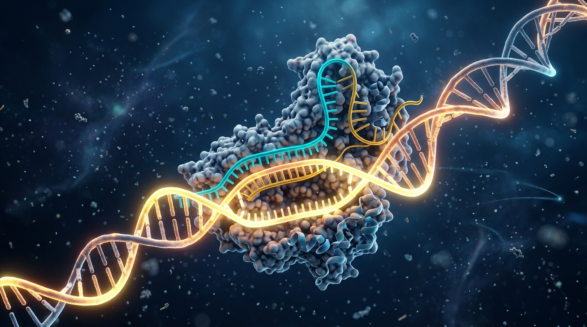
WT-SpCas9 Structural Allostery & Checkpoint Kinetics
Directional R-Loop & HNH 32 Å Rotation
Mismatch Sensitivity Profile
Engineered High-Fidelity Nucleases: eSpCas9, HF1 & SuperFi
eSpCas9(1.1) (K848A / K1003A / R1060A)
Weakens binding to the displaced non-target strand. Mismatched heteroduplexes fail to overcome the strand separation barrier and rapidly re-anneal.
SpCas9-HF1 & SuperFi-Cas9
HF1 (N497A/R661A/Q695A/Q926A) removes 4 phosphate H-bonds. SuperFi-Cas9 stabilizes the REC3 loop (797-804), restoring on-target rate (kobs = 0.165 s−¹).
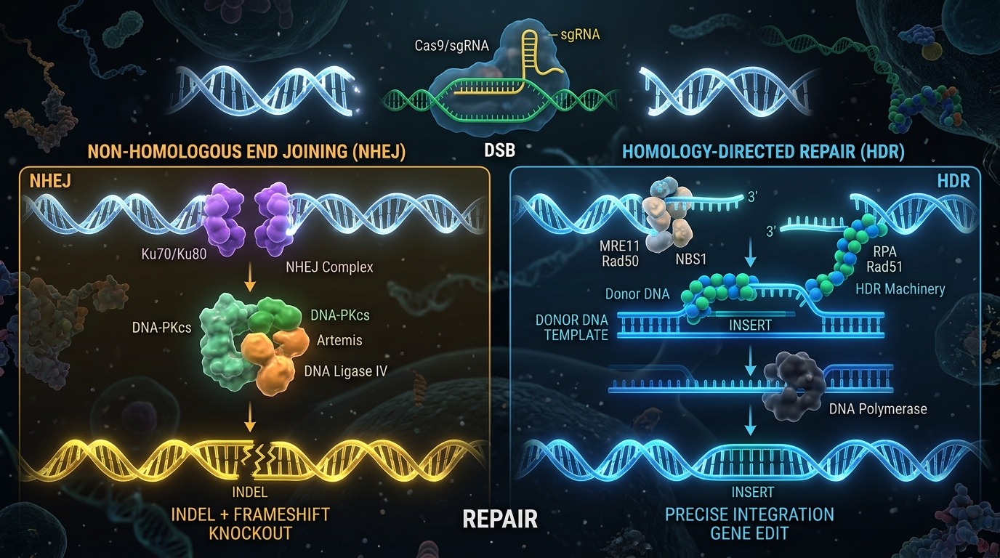
Epigenome Modulation: CRISPRi, CRISPRa & CRISPRoff
Heterochromatin Compaction
Recruits KAP1 (TRIM28), SETDB1, and HDAC1/2. Deposits repressive H3K9me3 across a 1.5 kb window around the TSS, achieving >95% silencing.
Transcriptional Upregulation
Tripartite activator (VP64-p65-Rta) recruits TFIID, TFIIH, and p300/CBP histone acetyltransferases, driving 10- to 500-fold endogenous activation.
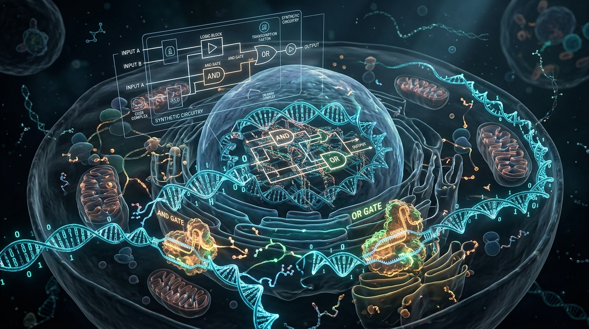
In Vivo Nanoparticle Delivery: Ionizable LNPs & Hepatic Targeting
4-Component Lipid Architecture
One-Time Curative Knockout
NTLA-2001 (TTR) and VERVE-101 (PCSK9) achieve >85–95% sustained serum protein reduction with transient nuclease clearance (<48h).
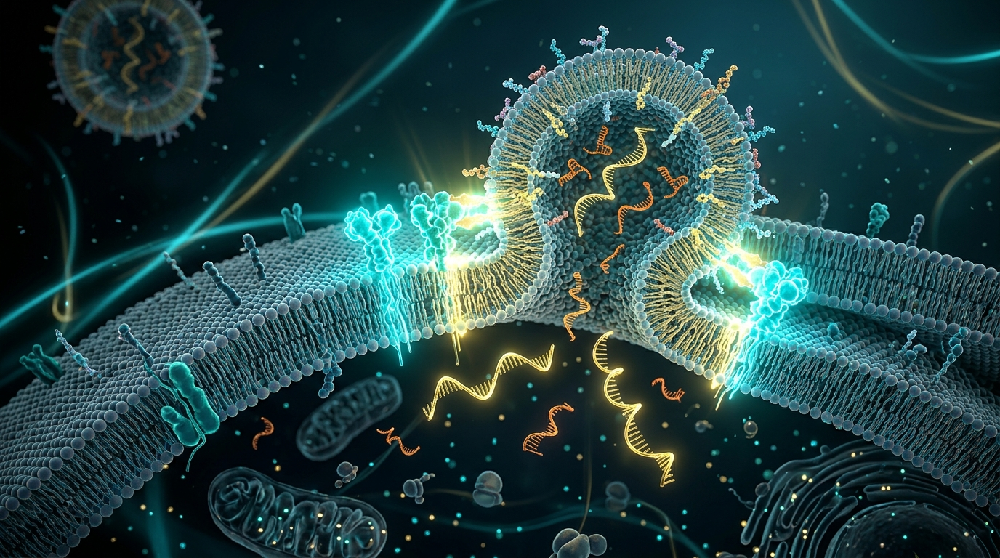
Precision Base Editing: CBE & ABE Deaminase Engineering
Cytosine Deamination & UGI
Cytidine deaminase converts C→U within a 4–8 bp window. 2x UGI domains block host UNG base-excision repair, while non-edited strand nicking directs mismatch repair.
Evolved TadA-8e Deaminase
TadA-8e (8 rational mutations) accelerates deamination to 1.8 × 10&sup6; M−¹s−¹. High-fidelity V106W narrows the window (pos 4–7), eliminating RNA/DNA bystander edits.
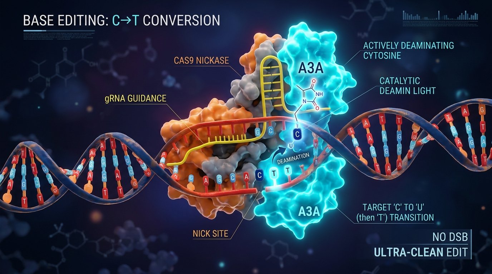
Search-and-Replace Prime Editing: PE2, PE3, PEmax & twinPE
3'-Flap Reverse Transcription
Engineered Efficiency Upgrades
PEmax (codon-optimized + RT mutations) + epegRNA (3'-evopreQ1 structured motif) elevates efficiency to 55–85% with <0.5% indels.
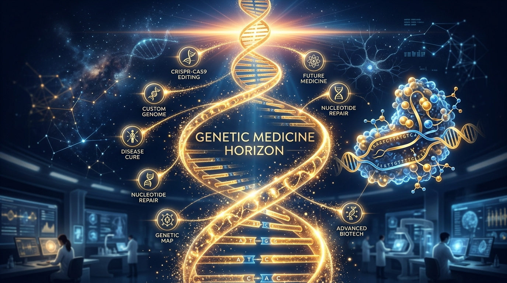
Ex Vivo Autologous HSPC Editing: Exa-cel (CASGEVY)
GATA1 Motif Disruption
Ablates BCL11A exclusively in the erythroid lineage, avoiding systemic toxicities in B-cell lymphopoiesis while maintaining normal stem cell multipotency.
100% Freedom from Pain Crises
Annualized vaso-occlusive crises (VOCs) dropped from 4.2 events/yr to 0.0 events/yr in 29/30 patients; β-thalassemia patients achieved full transfusion independence.
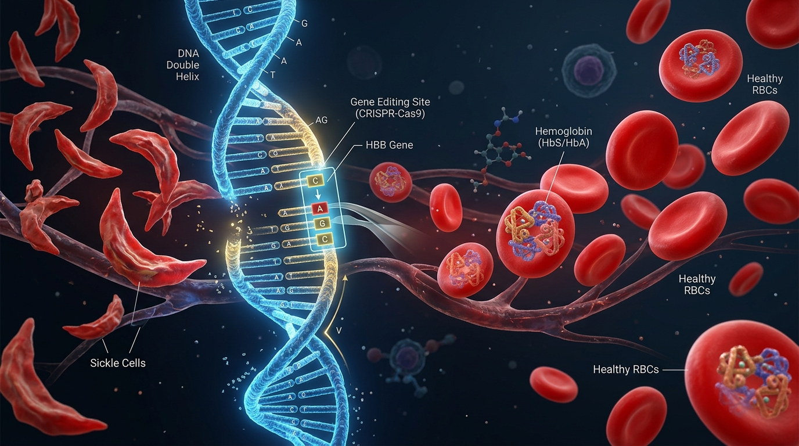
Universal Off-the-Shelf Allogeneic CAR-T Cell Engineering
Simultaneous 3-Gene RNP Disruption
Controlled Genomic Rearrangements
Inter-chromosomal translocations across chromosomes 2, 14, and 15 stabilize at 0.26% total frequency, exhibiting zero oncogenic clonal expansion.
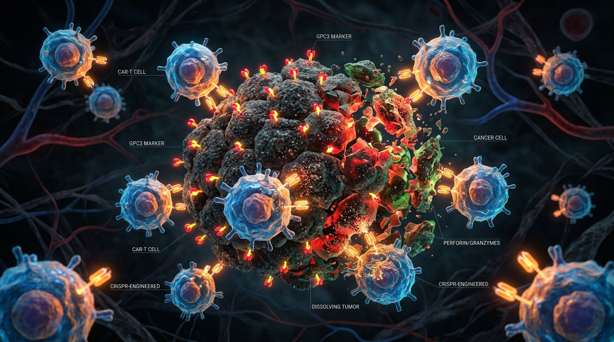
Near-PAMless Nuclear Targeting: Engineered SpG & SpRY
Loop Re-Engineering in PID Domain
SpRY-HF1 High-Fidelity Variant
Combining SpRY mutations with HF1 non-target groove engineering restores stringent 20-bp guide matching, suppressing off-target scanning.
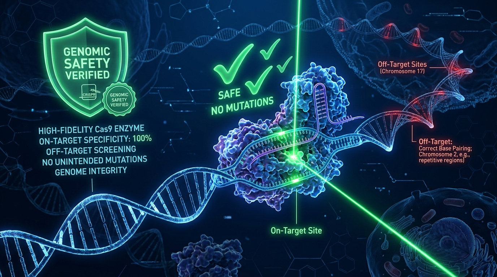
Mitochondrial Genome Editing: RNA-Free DdCBE Platforms
Dual TALE-MTS-DddA Assembly
MERRF & MELAS Cybrid Rescue
Corrects pathogenic heteroplasmy from 85% to <15%, restoring basal oxygen consumption rate (OCR) and ATP synthesis in patient cybrids.
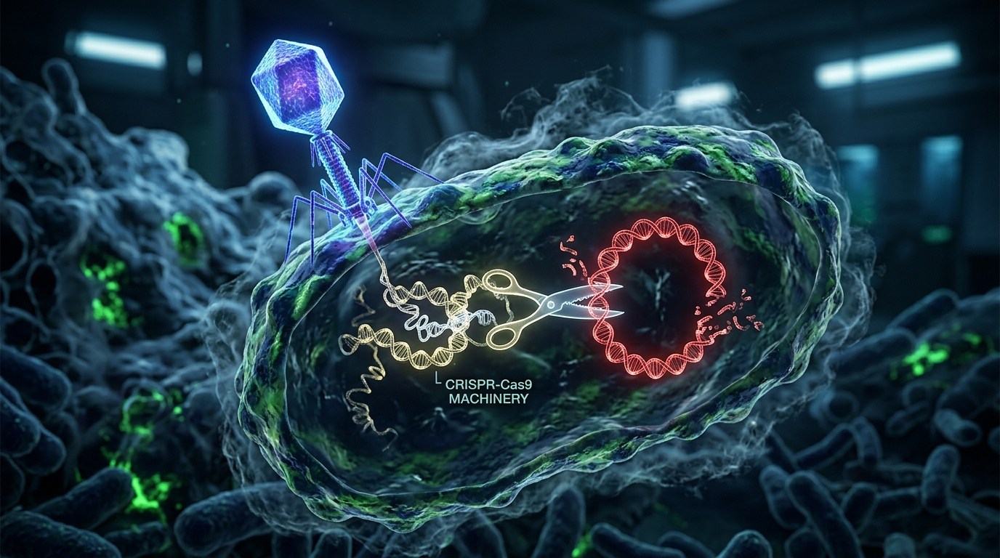
Direct Cross-Platform Synthesis & Translational Decision Matrix
| Platform | Primary Mechanism | Mutation Scope | DSBs / Indels | Clinical Status |
|---|---|---|---|---|
| WT-SpCas9 | Double-strand break (NHEJ) | Gene Knockout (Indels) | 100% DSBs (1-5% Transloc) | FDA Approved (Exa-cel) |
| SuperFi-Cas9 | High-fidelity DSB (Tuned) | Ultra-clean Knockout | DSBs (<0.001% Transloc) | IND-Enabling |
| CRISPRoff | H3K9me3 & 5mC Epigenetics | Heritable Silencing | 0% DSBs (Zero Indels) | Preclinical |
| Base Editors (ABE/CBE) | Deamination (C→T, A→G) | Transitions (~30% ClinVar) | <0.1% Indels (No DSBs) | Phase 1/2 (VERVE-101) |
| Prime Editors (PEmax) | pegRNA Reverse Transcription | All 12 Substitutions, Ins/Del | <0.5% Indels (No DSBs) | Phase 1/2 (PM359) |
| Mitochondrial DdCBE | Protein TALE-Split-DddA | mtDNA C•G → T•A (5'-TC) | 0% DSBs (Zero Depletion) | Preclinical Validation |
Deploy ionizable LNPs (ApoE-LDLR) for permanent lifelong knockout in PCSK9 and TTR amyloidosis.
Use autologous Exa-cel for hemoglobinopathies; mandate high-fidelity RNP multiplexing for allogeneic CAR-T.
Deploy PEmax for transversions (HBB E6V); use protein-only DdCBE with MTS for maternal encephalomyopathies.
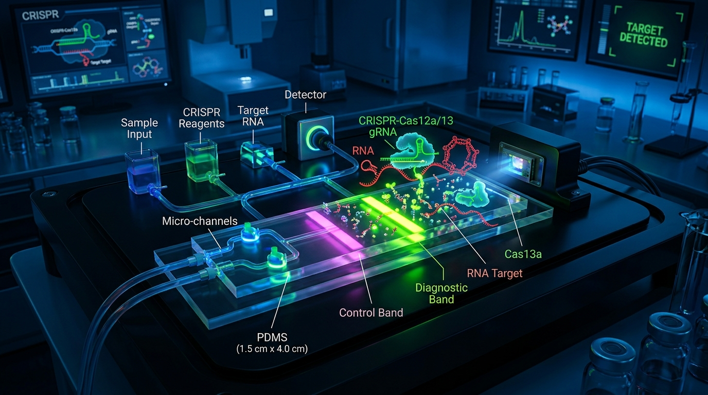
Key Literature References & Peer-Reviewed Monograph Citations
- [1] Doudna, J. A. & Charpentier, E. The new frontier of genome engineering with CRISPR-Cas9. Science 346, 1258096 (2014). doi:10.1126/science.1258096
- [2] Sternberg, S. H., Redding, S., Jinek, M., Greene, E. C. & Doudna, J. A. DNA interrogation by the CRISPR RNA-guided endonuclease Cas9. Nature 507, 62–67 (2014). doi:10.1038/nature13011
- [3] Slaymaker, I. M. et al. Rationally engineered Cas9 nucleases with improved specificity. Science 351, 84–88 (2016). doi:10.1126/science.aad5227
- [4] Kleinstiver, B. P. et al. High-fidelity CRISPR-Cas9 nucleases with no detectable genome-wide off-target effects. Nature 529, 490–495 (2016). doi:10.1038/nature16526
- [5] Chen, J. S. et al. Enhanced proofreading governs CRISPR-Cas9 targeting accuracy. Nature 550, 407–410 (2017). doi:10.1038/nature24268
- [6] Gilbert, L. A. et al. CRISPR-mediated modular RNA-guided regulation of transcription in eukaryotes. Cell 154, 442–451 (2013). doi:10.1016/j.cell.2013.06.044
- [7] Qi, L. S. et al. Repurposing CRISPR as an RNA-guided platform for sequence-specific control of gene expression. Cell 152, 1173–1183 (2013). doi:10.1016/j.cell.2013.02.022
- [8] Finn, J. D. et al. A single administration of CRISPR-Cas9 lipid nanoparticles achieves robust in vivo genome editing. Cell Rep 22, 2227–2235 (2018). doi:10.1016/j.celrep.2018.02.014
- [9] Gillmore, J. D. et al. CRISPR-Cas9 in vivo gene editing for transthyretin amyloidosis. N Engl J Med 385, 493–502 (2021). doi:10.1056/NEJMoa2107454
- [10] Nuñez, J. K. et al. Genome-wide programmable transcriptional memory by CRISPR-based epigenome editing. Cell 184, 2503–2519 (2021). doi:10.1016/j.cell.2021.03.025
- [11] Komor, A. C., Kim, Y. B., Packer, M. S., Zuris, J. A. & Liu, D. R. Programmable editing of a target base in genomic DNA without double-stranded DNA cleavage. Nature 533, 420–424 (2016). doi:10.1038/nature17946
- [12] Gaudelli, N. M. et al. Programmable base editing of A•T to G•C in genomic DNA without DNA cleavage. Nature 551, 464–471 (2017). doi:10.1038/nature24644
- [13] Richter, M. F. et al. Phage-assisted evolution of an adenine base editor with improved on-target and off-target activity. Nat Biotechnol 38, 883–891 (2020). doi:10.1038/s41587-020-0453-x
- [14] Anzalone, A. V. et al. Search-and-replace genome editing without double-strand breaks or donor DNA. Nature 576, 149–157 (2019). doi:10.1038/s41586-019-1711-4
- [15] Chen, P. J. et al. Enhanced prime editing systems by manipulating cellular determinants of editing outcomes. Cell 184, 5635–5652 (2021). doi:10.1016/j.cell.2021.09.018
- [16] Frangoul, H. et al. CRISPR-Cas9 gene editing for sickle cell disease and β-thalassemia. N Engl J Med 384, 252–260 (2021). doi:10.1056/NEJMoa2031054
- [17] Locatelli, F. et al. Exagamglogene autotemcel for transfusion-dependent β-thalassemia. N Engl J Med 390, 1663–1676 (2024). doi:10.1056/NEJMoa2309673
- [18] Sharma, A. et al. Exagamglogene autotemcel for severe sickle cell disease. N Engl J Med 390, 1677–1689 (2024). doi:10.1056/NEJMoa2309676
- [19] Walton, R. T. et al. Unconstrained genome targeting with near-PAMless engineered CRISPR-Cas9 variants. Science 368, 290–296 (2020). doi:10.1126/science.aba8853
- [20] Mok, B. Y. et al. A bacterial cytidine deaminase toxin enables double-stranded DNA base editing in mammalian mitochondria. Nature 583, 631–637 (2020). doi:10.1038/s41586-020-2477-4